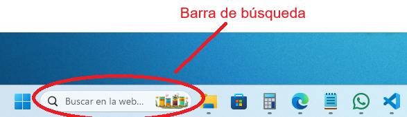
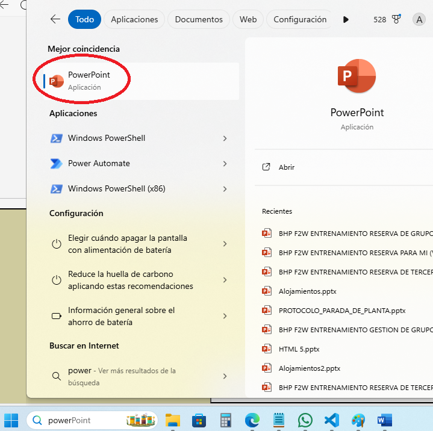
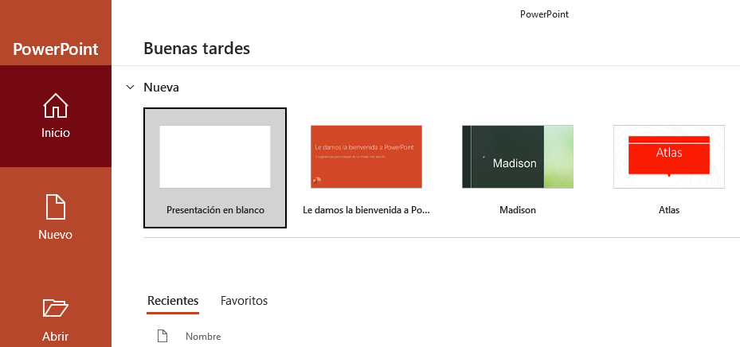
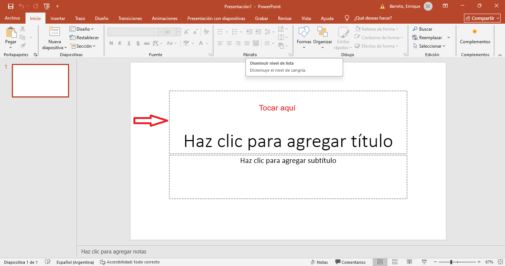
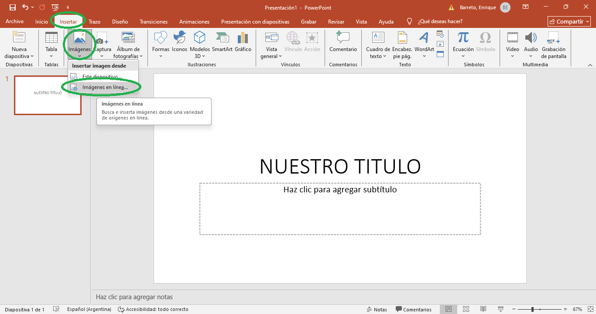
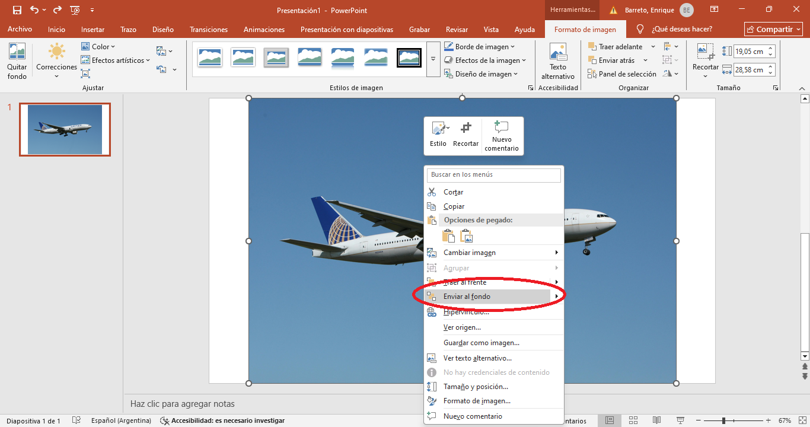

Seleccione la respuesta correcta:
a. Ubicamos el cursor en la barra de búsqueda:
b. Escribimos "power" sin comillas y de la lista desplegable seleccionamos la aplicación que dice "PowerPoint"
c. Esperamos unos segundos, dependiendo de nuestra máquina, y debería aparecer nuestra aplicación, y seguidamente pulsamos sobre el icono que dice "Presentación en blanco", así:
d. Deberá aparecer una pantalla en la que se nos permite hacer varias acciones. Procedemos a escribir un título, así:
e. Una vez colocado el título, intentaremos colocar una imagen, vamos a la pestaña "insertar":
f. La imagen no permite ver el título y el otro texto, así que vamos a organizarlo. Con el botón derecho del ratón, hacemos click sobre la imagen y de la lista desplegable seleccionamos la opción "enviar al fondo"
g. Ahora la imagen y los textos se muestran. Como tarea, ustedes organizarán el resto para que se vea como mejor les parezca.
h. Una vez terminada nuestra presentación, pulsamos en la pestaña "Archivo" y luego en "Guardar como", tal como hicimos con la aplicación "Word"